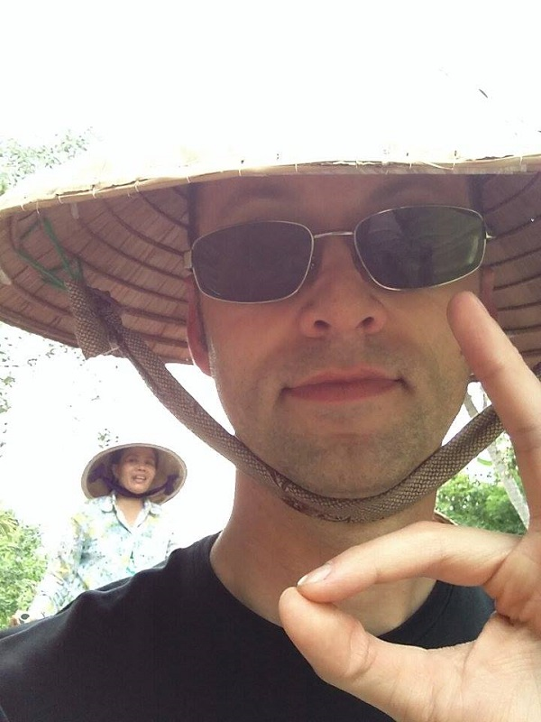

Colin Huber, Geomatics Engineer
School of Learning: udacity.com
Bio: Hi there! I am Colin Huber and am a Geomatics Engineer with experience in Front End Web Development.
I specialize in embedded GNSS systems software and system testing for 15+ years, and have a passion for
travelling in SE Asia. I always like to keep learning and helping anyone out whenever I can!
Vietnam Trip: November 2016
This was my second trip to Vietnam! I made a lot of new friends in Vietnam this trip and tasted a lot
of new Vietnamese foods.
 Cao lầu, Hoi An Specialty
Cao lầu, Hoi An Specialty
I did a tour of the Mekong Delta river and got a personal tour guide on a boat!

Mekong River Delta Tour wearing Non-la (conical hat)
The weather is typically more rainy when I go during November, but the weather is
still quite
warm!
I can't believe the architecture and engineering here can withstand heavy raining and floods!